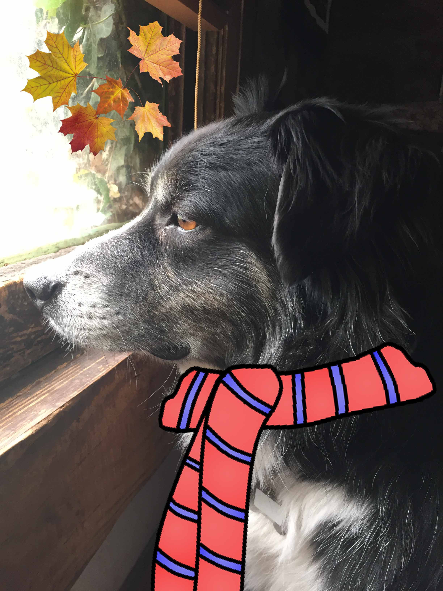

I'm glad you're here to learn about me. I'm a technical writer with a librarian background who's moving into the field of web development. And yes, my last name is really Pancake. Here's some stuff about me!
The Basics
I was born in Arvada
I moved to Denver when I was 7
I went to college in Boulder
I studied abroat in Budapest
I live in Denver, in the Baker neighborhood with my husband and my best buddy Pete Pancake the border-collie

Work Experience
Technical Writing for Hardware and Software (Terumo BCT)
Medical Device Industry (Terumo BCT)
Working with Agile software dev teams (Terumo BCT)
String developement (Terumo BCT)
Elections and Ballot Processing Coordination (Denver Elections Division)